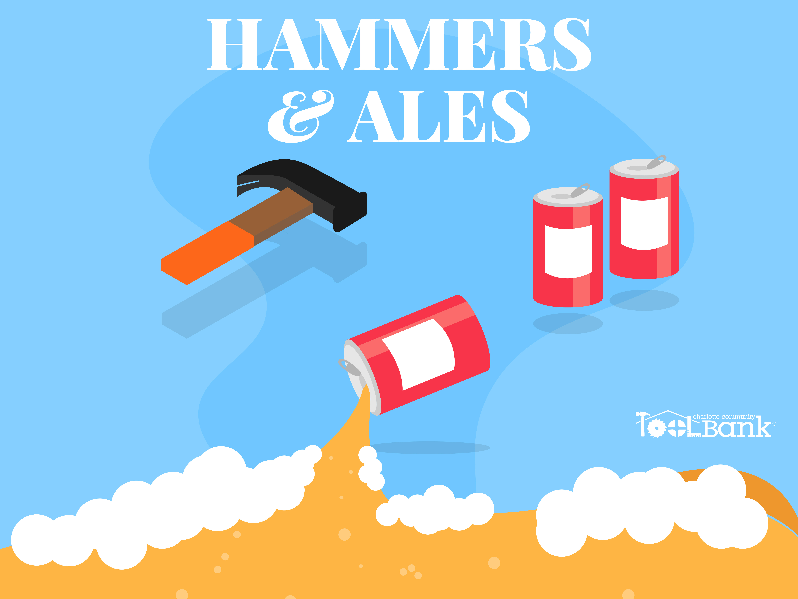
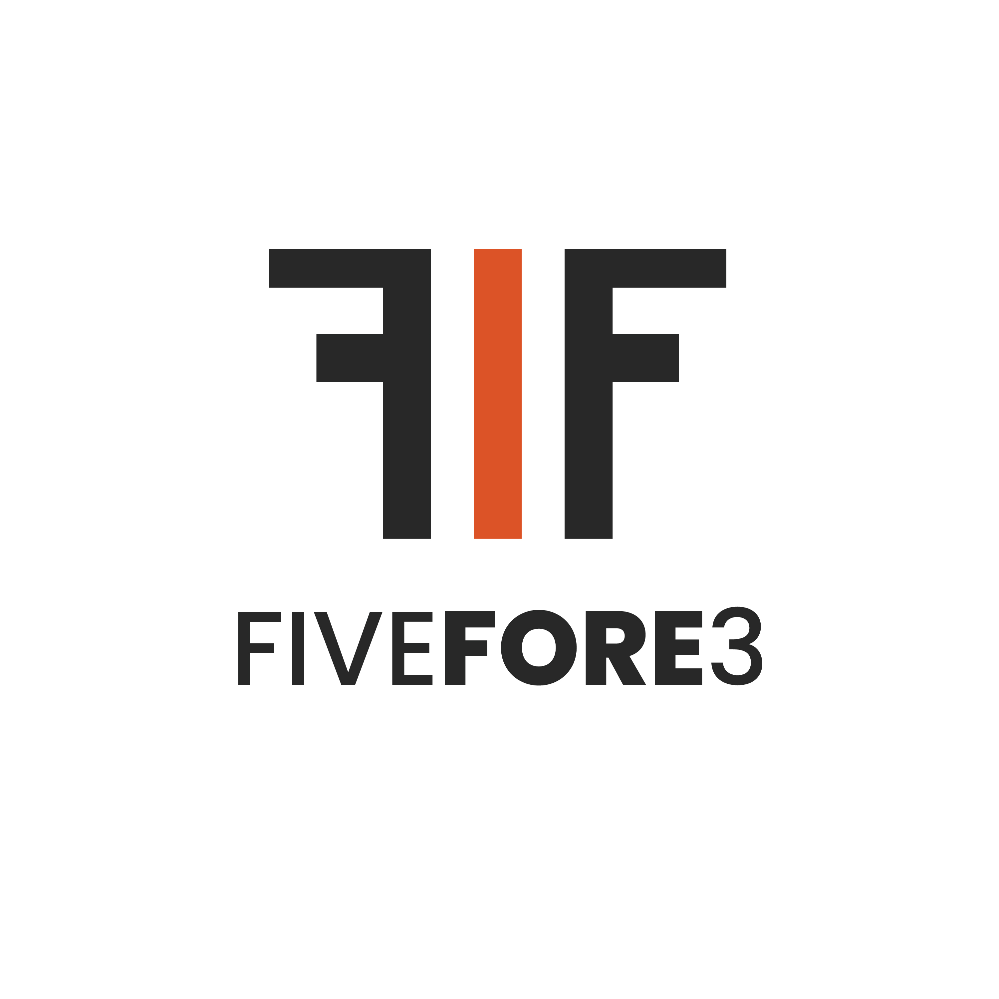
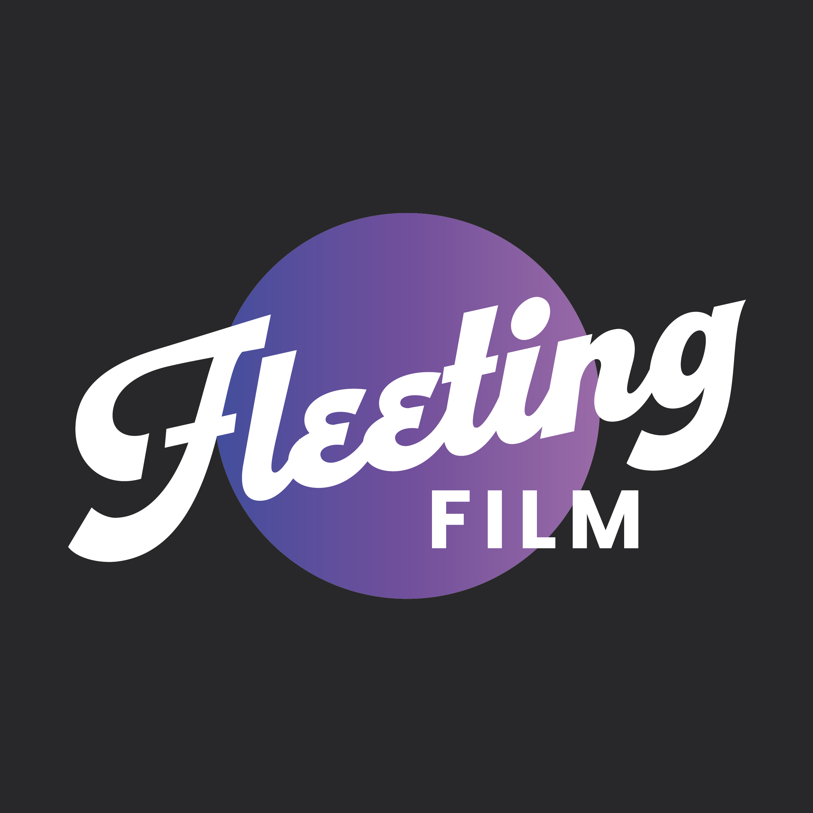
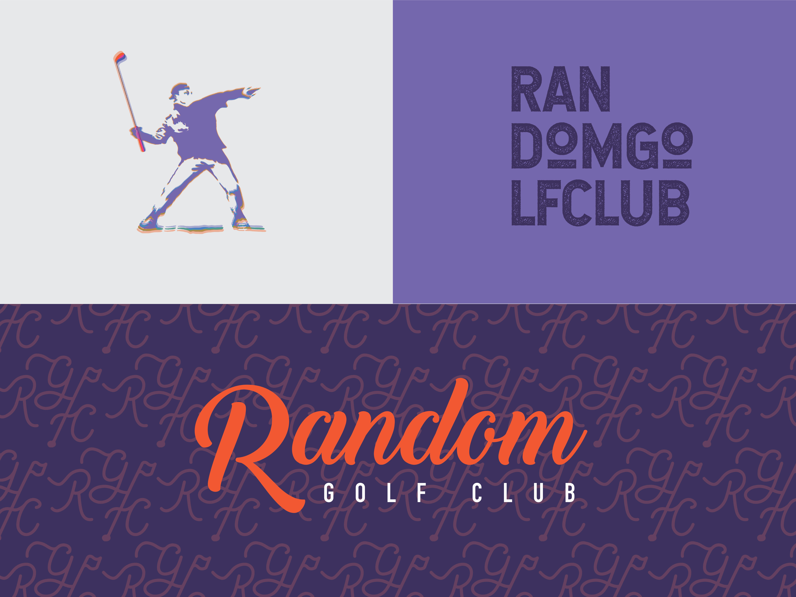
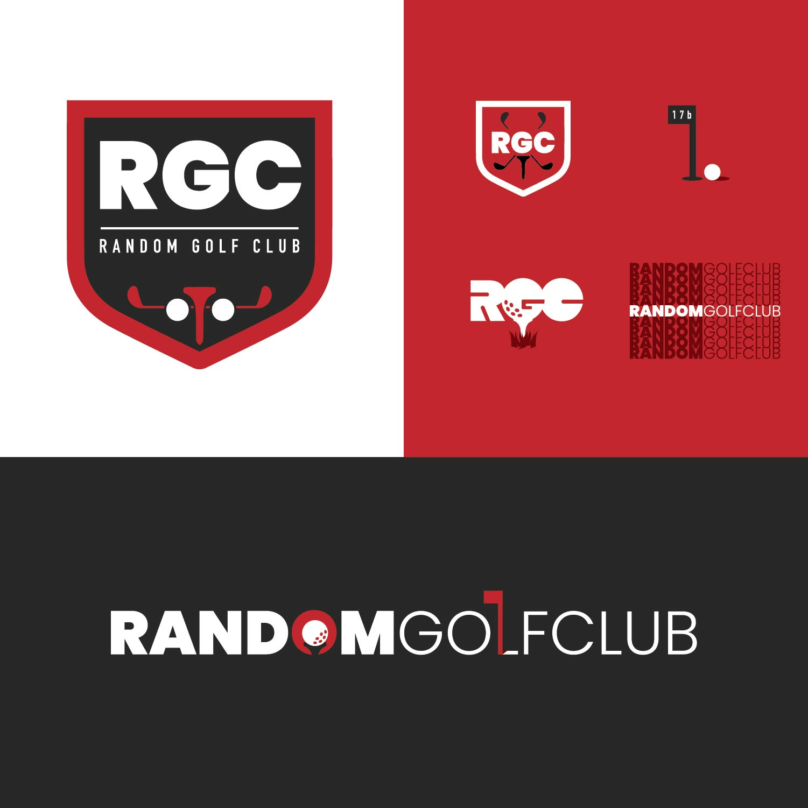
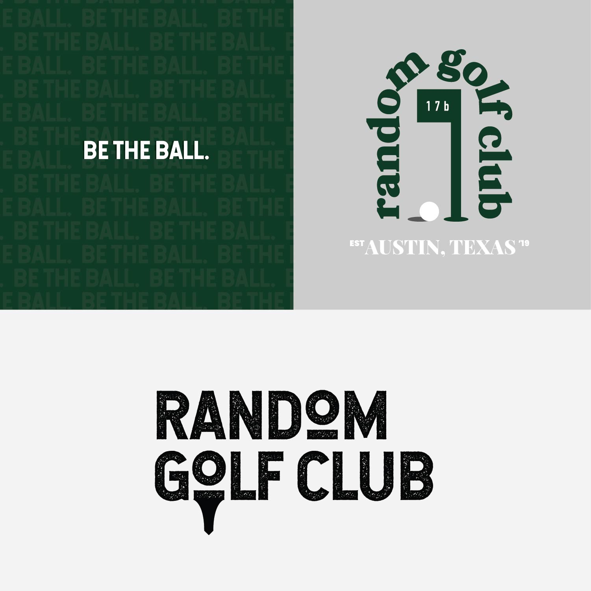
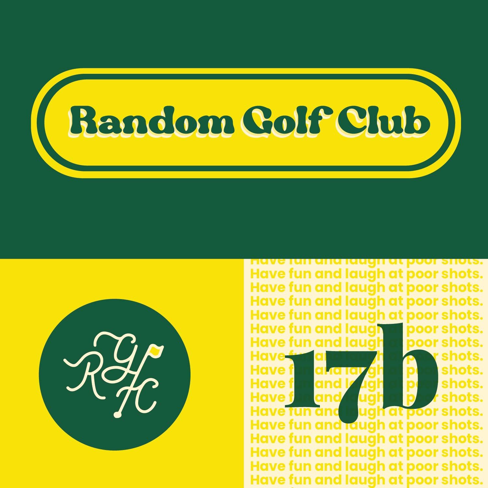

I was tasked with creating marketing materials for the nonprofit Charlotte Tool Bank for their Hammer & Ales event — a fundraiser to help raise money for the organization and its mission.



Golf-related design work for a friend's startup golf company — building out the brand identity, logo system, and visual direction for Five Fore Three from the ground up.

A personal side project in which I created full branding and social materials for Fleeting Film — a film camera rental company for weddings and events. Concept to completion, entirely self-directed.

Greeting cards designed for WD Partners to give to associates during major life events — crafted to feel personal, elevated, and true to the WD brand.
Self-directed speculative design work for Random Golf Club — one of my favorite golf brands. An exercise in brand exploration, reimagining how the visual identity could evolve.



